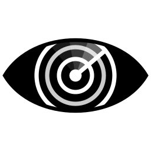

Marke
Bildzeichen
ab 32 px
App
klein
16 px

schwarz
negativ
Wortmarke und Siegel
Farben
Kontrast wird beim Laden gemessen (WCAG 2.2: Text ≥ 4,5:1, Bedienelemente und Symbole ≥ 3:1).
Schrift und Zustände
Skala 13 / 16 / 20 / 25 / 31 / 39 px
Hosts 128
Aktive Alarme
Abschnittstitel
Platte /var auf pve-1 läuft in 9 Tagen voll.
Fließtext: Sensoren prüfen Größe, Ölförderung und Übermaß – 0123456789 € ß.
zuletzt gemeldet vor 2 Min. · 4,2 % · 22.11.2026, 14:05
openwacht-zentrale sichern -jetzt
Zustände: Form + Farbe
OK Warnung Kritisch Bestätigt Unbekannt Wartung| Zustand | Gerät | Sensor | Wert |
|---|---|---|---|
| Kritisch | pve-1 | Platte /var | 96 % |
| Warnung | srv-dms | Backup-Alter | 29 Std. |
| Wartung | pc-empfang | Agent | – |
Graphenreihen
4 Farben, Reihe 5–8 gestrichelt
Reihe 1 pve-1 · 2 pve-2 · 3 srv-wiki · 4 srv-dms · 5 nas (gestrichelt) · 6 fritzbox (gestrichelt)
Bausteine
Knöpfe
Formular
1–64 Zeichen, eindeutig im Mandanten.
Meldungen
Kritisch: Platte /var 96 % seit 14:05.
Wartung bis 18:00 · Patchday
Neue Version ist installiert.